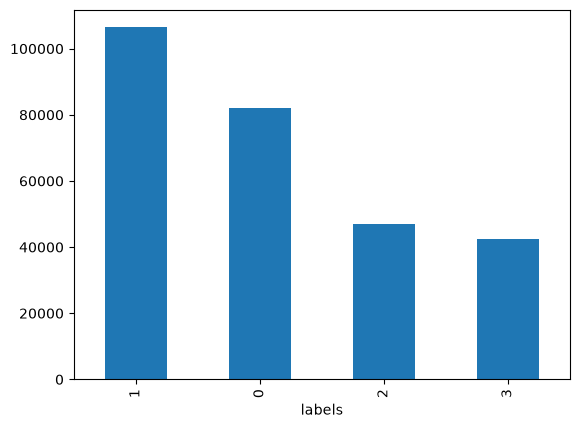
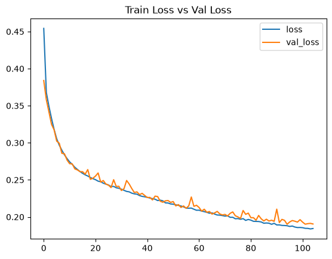
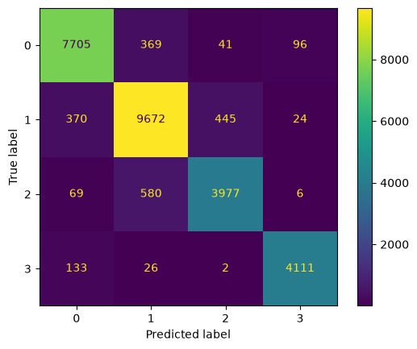

%pip install --upgrade -q keras-tuner matplotlib numpy pandas scikit-learn tensorboard tensorflowSpotify Song’s Emotion Analysis
Deep Learning
Classification
Overview
This notebook investigates the implementation of artificial neural network (ANN) models to classify spotify song’s label using the following dataset.
The analysis covers these main steps:
- Data preprocessing and Exploratory Data Analysis (EDA)
- Model training
- Model evaluation
Additionally, hyperparameter tuning via Keras-Tuner is systematically applied across some model configurations to determine optimal model parameters and prevent overfitting.
The objective of this notebook is to perform an end-to-end machine learning process, implement a Multi Layer Perceptron (MLP) model, and its hyperparameter tuning.
Install and Import Packages
import keras_tuner as kt
import matplotlib.pyplot as plt
import numpy as np
import pandas as pd
import tensorflow as tfLoad Dataset
df = pd.read_csv('data/spotify.csv')
df.head()| duration (ms) | danceability | energy | loudness | speechiness | acousticness | instrumentalness | liveness | valence | tempo | spec_rate | labels | |
|---|---|---|---|---|---|---|---|---|---|---|---|---|
| 0 | 195000.0 | 0.611 | 0.614 | -8.815 | 0.0672 | 0.0169 | 0.000794 | 0.7530 | 0.520 | 128.050 | 3.446154e-07 | 2 |
| 1 | 194641.0 | 0.638 | 0.781 | -6.848 | 0.0285 | 0.0118 | 0.009530 | 0.3490 | 0.250 | 122.985 | 1.464234e-07 | 1 |
| 2 | 217573.0 | 0.560 | 0.810 | -8.029 | 0.0872 | 0.0071 | 0.000008 | 0.2410 | 0.247 | 170.044 | 4.007850e-07 | 1 |
| 3 | 443478.0 | 0.525 | 0.699 | -4.571 | 0.0353 | 0.0178 | 0.000088 | 0.0888 | 0.199 | 92.011 | 7.959809e-08 | 0 |
| 4 | 225862.0 | 0.367 | 0.771 | -5.863 | 0.1060 | 0.3650 | 0.000001 | 0.0965 | 0.163 | 115.917 | 4.693131e-07 | 1 |
Data Preprocessing and EDA
Let’s take a look at the overview of the dataset.
df.info()<class 'pandas.DataFrame'>
RangeIndex: 277938 entries, 0 to 277937
Data columns (total 12 columns):
# Column Non-Null Count Dtype
--- ------ -------------- -----
0 duration (ms) 277938 non-null float64
1 danceability 277938 non-null float64
2 energy 277938 non-null float64
3 loudness 277938 non-null float64
4 speechiness 277938 non-null float64
5 acousticness 277938 non-null float64
6 instrumentalness 277938 non-null float64
7 liveness 277938 non-null float64
8 valence 277938 non-null float64
9 tempo 277938 non-null float64
10 spec_rate 277938 non-null float64
11 labels 277938 non-null int64
dtypes: float64(11), int64(1)
memory usage: 25.4 MBBased on the output above, here are some informations about the dataset. - The dataset has 277938 rows and 12 columns. - The target variable is ‘labels’. - All features are already in numerical.
Let’s also see the distribution of the target variable (labels).
df['labels'].value_counts().plot(kind='bar')
Notice that the labels distribution is imbalance. However, we have massive amount of data (totaling over 270,000 samples). Even the smallest class (Class 3) contains around 40,000 sample which means more than sufficient for modern machine learning algorithms to learn the patterns and features of the class without suffering from a lack of data variety.
Check and Drop Duplicated Rows (If Exist)
# check and drop duplicated rows (if exist)
total_duplicates = df.duplicated().sum()
print(f'Total duplicated rows: {total_duplicates}')
if total_duplicates:
df = df.drop_duplicates().reset_index(drop=True)
print('All duplicated rows has been removed.')
else:
print('No duplicated rows need to be dropped.')Total duplicated rows: 1678
All duplicated rows has been removed.Check Missing Values
df.isna().sum()duration (ms) 0
danceability 0
energy 0
loudness 0
speechiness 0
acousticness 0
instrumentalness 0
liveness 0
valence 0
tempo 0
spec_rate 0
labels 0
dtype: int64Numerical Features Scaling
Based on the displayed df before, we can see that the numerical features exhibit vastly different scales and measurement ranges. MinMaxScaler is applied to transform all numerical features to transform the data into range \([0,1]\).
Before that, split the the data into train, validation, and test set. Here, we are using 80:10:10 ratio for the train, validation, and test set, respectively.
We must split our data first, to avoid data leakage
from sklearn.model_selection import train_test_split
target = 'labels'
y = df[target].values
X_df = df.drop(columns=[target])
X_train_df, X_valtest_df, y_train, y_valtest = train_test_split(X_df, y, test_size=0.2, random_state=42)
X_val_df, X_test_df, y_val, y_test = train_test_split(X_valtest_df, y_valtest, test_size=0.5, random_state=42)
print(f'X_train_df shape: {X_train_df.shape}')
print(f'X_val_df shape: {X_val_df.shape}')
print(f'X_test_df shape: {X_test_df.shape}')
print(f'y_train shape: {y_train.shape}')
print(f'y_val shape: {y_val.shape}')
print(f'y_test shape: {y_test.shape}')X_train_df shape: (221008, 11)
X_val_df shape: (27626, 11)
X_test_df shape: (27626, 11)
y_train shape: (221008,)
y_val shape: (27626,)
y_test shape: (27626,)from sklearn.preprocessing import MinMaxScaler
scaler = MinMaxScaler()
X_train = X_train_df.values
X_val = X_val_df.values
X_test = X_test_df.values
X_train_scaled = scaler.fit_transform(X_train)
X_val_scaled = scaler.transform(X_val)
X_test_scaled = scaler.transform(X_test)
X_train_scaled_df = pd.DataFrame(data=X_train_scaled, columns=X_df.columns)
X_val_scaled_df = pd.DataFrame(data=X_val_scaled, columns=X_df.columns)
X_test_scaled_df = pd.DataFrame(data=X_test_scaled, columns=X_df.columns)X_train_scaled_df| duration (ms) | danceability | energy | loudness | speechiness | acousticness | instrumentalness | liveness | valence | tempo | spec_rate | |
|---|---|---|---|---|---|---|---|---|---|---|---|
| 0 | 0.063740 | 0.496964 | 0.7730 | 0.855589 | 0.033990 | 0.019980 | 0.000000 | 0.1390 | 0.2960 | 0.350949 | 0.002305 |
| 1 | 0.025156 | 0.533401 | 0.0896 | 0.632955 | 0.034404 | 0.995984 | 0.826000 | 0.1070 | 0.0509 | 0.620996 | 0.005683 |
| 2 | 0.087669 | 0.741903 | 0.6240 | 0.777582 | 0.051088 | 0.143574 | 0.016000 | 0.3630 | 0.9210 | 0.491596 | 0.002537 |
| 3 | 0.035692 | 0.142713 | 0.0193 | 0.414395 | 0.044767 | 0.952811 | 0.653000 | 0.1080 | 0.0642 | 0.262751 | 0.005312 |
| 4 | 0.042879 | 0.738866 | 0.3440 | 0.820073 | 0.065907 | 0.945783 | 0.000000 | 0.7070 | 0.7260 | 0.549274 | 0.006560 |
| ... | ... | ... | ... | ... | ... | ... | ... | ... | ... | ... | ... |
| 221003 | 0.046574 | 0.554656 | 0.9870 | 0.868472 | 0.081244 | 0.000134 | 0.000303 | 0.3430 | 0.3810 | 0.424925 | 0.007468 |
| 221004 | 0.033153 | 0.614372 | 0.5970 | 0.788105 | 0.032021 | 0.235944 | 0.005890 | 0.1450 | 0.4360 | 0.497577 | 0.004076 |
| 221005 | 0.100396 | 0.566802 | 0.1440 | 0.712119 | 0.044560 | 0.925703 | 0.122000 | 0.1040 | 0.3280 | 0.495401 | 0.001937 |
| 221006 | 0.092121 | 0.776316 | 0.7260 | 0.803610 | 0.043420 | 0.000100 | 0.924000 | 0.0983 | 0.0384 | 0.522603 | 0.002054 |
| 221007 | 0.040220 | 0.763158 | 0.6010 | 0.793119 | 0.073679 | 0.118474 | 0.000236 | 0.1220 | 0.9040 | 0.272965 | 0.007799 |
221008 rows × 11 columns
X_val_scaled_df| duration (ms) | danceability | energy | loudness | speechiness | acousticness | instrumentalness | liveness | valence | tempo | spec_rate | |
|---|---|---|---|---|---|---|---|---|---|---|---|
| 0 | 0.038265 | 0.820850 | 0.433 | 0.793921 | 0.125389 | 0.065161 | 0.000000 | 0.1040 | 0.4220 | 0.551462 | 0.013921 |
| 1 | 0.101077 | 0.386640 | 0.476 | 0.705547 | 0.090674 | 0.646586 | 0.000001 | 0.1190 | 0.6580 | 0.600142 | 0.003915 |
| 2 | 0.053011 | 0.812753 | 0.701 | 0.839173 | 0.031710 | 0.095984 | 0.000000 | 0.1150 | 0.5020 | 0.449020 | 0.002572 |
| 3 | 0.035242 | 0.400810 | 0.156 | 0.675970 | 0.030674 | 0.838353 | 0.000014 | 0.0791 | 0.5140 | 0.338461 | 0.003684 |
| 4 | 0.051663 | 0.466599 | 0.749 | 0.853506 | 0.039378 | 0.236948 | 0.000000 | 0.0998 | 0.5640 | 0.326683 | 0.003274 |
| ... | ... | ... | ... | ... | ... | ... | ... | ... | ... | ... | ... |
| 27621 | 0.055060 | 0.434211 | 0.754 | 0.880367 | 0.090777 | 0.019277 | 0.004810 | 0.3440 | 0.5600 | 0.611745 | 0.007097 |
| 27622 | 0.044716 | 0.605263 | 0.775 | 0.809843 | 0.087979 | 0.558233 | 0.703000 | 0.9000 | 0.1560 | 0.387921 | 0.008411 |
| 27623 | 0.077913 | 0.405870 | 0.330 | 0.726113 | 0.089430 | 0.914659 | 0.000000 | 0.1010 | 0.3350 | 0.576855 | 0.004985 |
| 27624 | 0.045081 | 0.387652 | 0.936 | 0.859708 | 0.194819 | 0.000748 | 0.012300 | 0.3400 | 0.0495 | 0.413796 | 0.018479 |
| 27625 | 0.060598 | 0.622470 | 0.718 | 0.820289 | 0.036269 | 0.040361 | 0.899000 | 0.1040 | 0.1740 | 0.408174 | 0.002584 |
27626 rows × 11 columns
X_test_scaled_df| duration (ms) | danceability | energy | loudness | speechiness | acousticness | instrumentalness | liveness | valence | tempo | spec_rate | |
|---|---|---|---|---|---|---|---|---|---|---|---|
| 0 | 0.067403 | 0.574899 | 0.0533 | 0.676880 | 0.042280 | 0.951807 | 0.002300 | 0.1010 | 0.212 | 0.469763 | 0.002715 |
| 1 | 0.059379 | 0.277328 | 0.8580 | 0.841364 | 0.032435 | 0.380522 | 0.208000 | 0.1720 | 0.488 | 0.630508 | 0.002357 |
| 2 | 0.051501 | 0.732794 | 0.6860 | 0.840145 | 0.218653 | 0.021888 | 0.000000 | 0.0735 | 0.451 | 0.547094 | 0.018237 |
| 3 | 0.041992 | 0.695344 | 0.5630 | 0.852364 | 0.039896 | 0.061948 | 0.000026 | 0.4800 | 0.542 | 0.312390 | 0.004052 |
| 4 | 0.065311 | 0.593117 | 0.6770 | 0.796991 | 0.030466 | 0.043173 | 0.093600 | 0.0884 | 0.562 | 0.587886 | 0.002018 |
| ... | ... | ... | ... | ... | ... | ... | ... | ... | ... | ... | ... |
| 27621 | 0.041942 | 0.527328 | 0.9780 | 0.904035 | 0.283938 | 0.209839 | 0.272000 | 0.4240 | 0.175 | 0.735547 | 0.028869 |
| 27622 | 0.056544 | 0.579960 | 0.5750 | 0.807498 | 0.036373 | 0.765060 | 0.569000 | 0.2990 | 0.199 | 0.285494 | 0.002771 |
| 27623 | 0.156514 | 0.341093 | 0.7420 | 0.861406 | 0.040933 | 0.585341 | 0.000006 | 0.1960 | 0.373 | 0.620955 | 0.001148 |
| 27624 | 0.052101 | 0.699393 | 0.7900 | 0.845236 | 0.058135 | 0.024398 | 0.000000 | 0.0453 | 0.734 | 0.388031 | 0.004795 |
| 27625 | 0.071836 | 0.582996 | 0.8470 | 0.820906 | 0.034611 | 0.011245 | 0.037200 | 0.1180 | 0.622 | 0.416482 | 0.002089 |
27626 rows × 11 columns
Train Model with Hyperparameter Tuning
Hyperparameter Tuning Using Keras-Tuner
# remember always make sure that the X_train/val/test and y_train/val/test are in float32 datatype
# and y_train/val/test is in form of 1 column
X_train = X_train_scaled_df.values.astype(dtype=np.float32)
y_train = y_train.reshape(-1, 1).astype(dtype=np.float32)
X_val = X_val_scaled_df.values.astype(dtype=np.float32)
y_val = y_val.reshape(-1, 1).astype(dtype=np.float32)
print(f'X_train shape: {X_train.shape}')
print(f'y_train shape: {y_train.shape}')
print(f'X_val shape: {X_val.shape}')
print(f'y_val shape: {y_val.shape}')X_train shape: (221008, 11)
y_train shape: (221008, 1)
X_val shape: (27626, 11)
y_val shape: (27626, 1)input_size = X_train.shape[1]
def build_model(hp):
model = tf.keras.Sequential()
model.add(tf.keras.layers.Input(shape=(input_size,)))
n_hid_layers = hp.Int('n_hid_layers', min_value=1, max_value=3, step=1)
for layer in range(n_hid_layers):
n_neurons = hp.Int(f'n_neurons_{layer}', min_value=8, max_value=128, step=8)
act = hp.Choice(f'activation_{layer}',
['linear', 'relu', 'sigmoid', 'tanh'])
model.add(tf.keras.layers.Dense(n_neurons, activation=act))
model.add(tf.keras.layers.Dense(4, activation='softmax')) # multiclass
lr = hp.Float('learning_rate', 1e-5, 1e-2)
opt = tf.keras.optimizers.AdamW(learning_rate=lr)
model.compile(loss='sparse_categorical_crossentropy', optimizer=opt, metrics=['accuracy']) # multiclass
return modeltf.keras.backend.clear_session()
tuner = kt.BayesianOptimization(hypermodel=build_model,
objective='val_loss',
max_trials=10,
directory='tuner_dir_0',
project_name='tune_spotify_model',
overwrite=False)
tuner.search_space_summary()Search space summary
Default search space size: 4
n_hid_layers (Int)
{'default': None, 'conditions': [], 'min_value': 1, 'max_value': 3, 'step': 1, 'sampling': 'linear'}
n_neurons_0 (Int)
{'default': None, 'conditions': [], 'min_value': 8, 'max_value': 128, 'step': 8, 'sampling': 'linear'}
activation_0 (Choice)
{'default': 'linear', 'conditions': [], 'values': ['linear', 'relu', 'sigmoid', 'tanh'], 'ordered': False}
learning_rate (Float)
{'default': 1e-05, 'conditions': [], 'min_value': 1e-05, 'max_value': 0.01, 'step': None, 'sampling': 'linear'}Find the best hyperparameters.
tuner.search(X_train, y_train, validation_data=(X_val, y_val),
epochs=100, batch_size=256)Trial 10 Complete [00h 02m 24s]
val_loss: 0.2080817073583603
Best val_loss So Far: 0.18831150233745575
Total elapsed time: 00h 23m 55stuner.results_summary(3)Results summary
Results in tuner_dir_0\tune_spotify_model
Showing 3 best trials
Objective(name="val_loss", direction="min")
Trial 08 summary
Hyperparameters:
n_hid_layers: 3
n_neurons_0: 48
activation_0: tanh
learning_rate: 0.000635494810129079
n_neurons_1: 120
activation_1: tanh
n_neurons_2: 40
activation_2: tanh
Score: 0.18831150233745575
Trial 09 summary
Hyperparameters:
n_hid_layers: 2
n_neurons_0: 96
activation_0: relu
learning_rate: 0.008251039712329468
n_neurons_1: 40
activation_1: linear
n_neurons_2: 48
activation_2: tanh
Score: 0.2080817073583603
Trial 03 summary
Hyperparameters:
n_hid_layers: 1
n_neurons_0: 32
activation_0: relu
learning_rate: 0.004561689776561494
n_neurons_1: 16
activation_1: sigmoid
n_neurons_2: 104
activation_2: relu
Score: 0.2286299765110016Retrain Best Model
model = build_model(tuner.get_best_hyperparameters()[0])
model.summary()Model: "sequential_1"
┏━━━━━━━━━━━━━━━━━━━━━━━━━━━━━━━━━┳━━━━━━━━━━━━━━━━━━━━━━━━┳━━━━━━━━━━━━━━━┓ ┃ Layer (type) ┃ Output Shape ┃ Param # ┃ ┡━━━━━━━━━━━━━━━━━━━━━━━━━━━━━━━━━╇━━━━━━━━━━━━━━━━━━━━━━━━╇━━━━━━━━━━━━━━━┩ │ dense_3 (Dense) │ (None, 48) │ 576 │ ├─────────────────────────────────┼────────────────────────┼───────────────┤ │ dense_4 (Dense) │ (None, 120) │ 5,880 │ ├─────────────────────────────────┼────────────────────────┼───────────────┤ │ dense_5 (Dense) │ (None, 40) │ 4,840 │ ├─────────────────────────────────┼────────────────────────┼───────────────┤ │ dense_6 (Dense) │ (None, 4) │ 164 │ └─────────────────────────────────┴────────────────────────┴───────────────┘
Total params: 11,460 (44.77 KB)
Trainable params: 11,460 (44.77 KB)
Non-trainable params: 0 (0.00 B)
early_stop = tf.keras.callbacks.EarlyStopping(patience=10, monitor='val_loss',
restore_best_weights=True,
verbose=1)
history = model.fit(X_train, y_train, validation_data=(X_val, y_val),
epochs=500, batch_size=256, callbacks=[early_stop])Epoch 1/500 864/864 ━━━━━━━━━━━━━━━━━━━━ 3s 2ms/step - accuracy: 0.8158 - loss: 0.4543 - val_accuracy: 0.8425 - val_loss: 0.3840 Epoch 2/500 864/864 ━━━━━━━━━━━━━━━━━━━━ 2s 2ms/step - accuracy: 0.8489 - loss: 0.3678 - val_accuracy: 0.8511 - val_loss: 0.3580 Epoch 3/500 864/864 ━━━━━━━━━━━━━━━━━━━━ 2s 2ms/step - accuracy: 0.8553 - loss: 0.3492 - val_accuracy: 0.8584 - val_loss: 0.3417 Epoch 4/500 864/864 ━━━━━━━━━━━━━━━━━━━━ 2s 2ms/step - accuracy: 0.8614 - loss: 0.3328 - val_accuracy: 0.8645 - val_loss: 0.3248 Epoch 5/500 864/864 ━━━━━━━━━━━━━━━━━━━━ 2s 2ms/step - accuracy: 0.8661 - loss: 0.3180 - val_accuracy: 0.8644 - val_loss: 0.3175 Epoch 6/500 864/864 ━━━━━━━━━━━━━━━━━━━━ 2s 2ms/step - accuracy: 0.8706 - loss: 0.3054 - val_accuracy: 0.8732 - val_loss: 0.3022 Epoch 7/500 864/864 ━━━━━━━━━━━━━━━━━━━━ 2s 2ms/step - accuracy: 0.8741 - loss: 0.2967 - val_accuracy: 0.8718 - val_loss: 0.2994 Epoch 8/500 864/864 ━━━━━━━━━━━━━━━━━━━━ 2s 2ms/step - accuracy: 0.8766 - loss: 0.2899 - val_accuracy: 0.8785 - val_loss: 0.2857 Epoch 9/500 864/864 ━━━━━━━━━━━━━━━━━━━━ 2s 2ms/step - accuracy: 0.8794 - loss: 0.2837 - val_accuracy: 0.8797 - val_loss: 0.2852 Epoch 10/500 864/864 ━━━━━━━━━━━━━━━━━━━━ 2s 3ms/step - accuracy: 0.8817 - loss: 0.2787 - val_accuracy: 0.8827 - val_loss: 0.2767 Epoch 11/500 864/864 ━━━━━━━━━━━━━━━━━━━━ 2s 3ms/step - accuracy: 0.8827 - loss: 0.2742 - val_accuracy: 0.8847 - val_loss: 0.2717 Epoch 12/500 864/864 ━━━━━━━━━━━━━━━━━━━━ 2s 3ms/step - accuracy: 0.8848 - loss: 0.2709 - val_accuracy: 0.8848 - val_loss: 0.2716 Epoch 13/500 864/864 ━━━━━━━━━━━━━━━━━━━━ 2s 3ms/step - accuracy: 0.8860 - loss: 0.2670 - val_accuracy: 0.8873 - val_loss: 0.2648 Epoch 14/500 864/864 ━━━━━━━━━━━━━━━━━━━━ 2s 2ms/step - accuracy: 0.8875 - loss: 0.2640 - val_accuracy: 0.8879 - val_loss: 0.2634 Epoch 15/500 864/864 ━━━━━━━━━━━━━━━━━━━━ 2s 2ms/step - accuracy: 0.8888 - loss: 0.2612 - val_accuracy: 0.8895 - val_loss: 0.2611 Epoch 16/500 864/864 ━━━━━━━━━━━━━━━━━━━━ 2s 2ms/step - accuracy: 0.8897 - loss: 0.2588 - val_accuracy: 0.8887 - val_loss: 0.2610 Epoch 17/500 864/864 ━━━━━━━━━━━━━━━━━━━━ 2s 2ms/step - accuracy: 0.8909 - loss: 0.2568 - val_accuracy: 0.8920 - val_loss: 0.2577 Epoch 18/500 864/864 ━━━━━━━━━━━━━━━━━━━━ 2s 2ms/step - accuracy: 0.8911 - loss: 0.2552 - val_accuracy: 0.8856 - val_loss: 0.2639 Epoch 19/500 864/864 ━━━━━━━━━━━━━━━━━━━━ 2s 2ms/step - accuracy: 0.8926 - loss: 0.2532 - val_accuracy: 0.8931 - val_loss: 0.2507 Epoch 20/500 864/864 ━━━━━━━━━━━━━━━━━━━━ 2s 2ms/step - accuracy: 0.8927 - loss: 0.2516 - val_accuracy: 0.8923 - val_loss: 0.2522 Epoch 21/500 864/864 ━━━━━━━━━━━━━━━━━━━━ 2s 3ms/step - accuracy: 0.8937 - loss: 0.2502 - val_accuracy: 0.8906 - val_loss: 0.2551 Epoch 22/500 864/864 ━━━━━━━━━━━━━━━━━━━━ 2s 3ms/step - accuracy: 0.8940 - loss: 0.2482 - val_accuracy: 0.8883 - val_loss: 0.2593 Epoch 23/500 864/864 ━━━━━━━━━━━━━━━━━━━━ 2s 2ms/step - accuracy: 0.8948 - loss: 0.2474 - val_accuracy: 0.8942 - val_loss: 0.2470 Epoch 24/500 864/864 ━━━━━━━━━━━━━━━━━━━━ 2s 3ms/step - accuracy: 0.8956 - loss: 0.2455 - val_accuracy: 0.8929 - val_loss: 0.2491 Epoch 25/500 864/864 ━━━━━━━━━━━━━━━━━━━━ 2s 2ms/step - accuracy: 0.8958 - loss: 0.2443 - val_accuracy: 0.8960 - val_loss: 0.2443 Epoch 26/500 864/864 ━━━━━━━━━━━━━━━━━━━━ 2s 3ms/step - accuracy: 0.8963 - loss: 0.2431 - val_accuracy: 0.8971 - val_loss: 0.2429 Epoch 27/500 864/864 ━━━━━━━━━━━━━━━━━━━━ 2s 2ms/step - accuracy: 0.8971 - loss: 0.2410 - val_accuracy: 0.8993 - val_loss: 0.2396 Epoch 28/500 864/864 ━━━━━━━━━━━━━━━━━━━━ 2s 2ms/step - accuracy: 0.8973 - loss: 0.2412 - val_accuracy: 0.8928 - val_loss: 0.2502 Epoch 29/500 864/864 ━━━━━━━━━━━━━━━━━━━━ 2s 2ms/step - accuracy: 0.8981 - loss: 0.2394 - val_accuracy: 0.8972 - val_loss: 0.2410 Epoch 30/500 864/864 ━━━━━━━━━━━━━━━━━━━━ 2s 2ms/step - accuracy: 0.8985 - loss: 0.2386 - val_accuracy: 0.8989 - val_loss: 0.2414 Epoch 31/500 864/864 ━━━━━━━━━━━━━━━━━━━━ 2s 2ms/step - accuracy: 0.8989 - loss: 0.2374 - val_accuracy: 0.9003 - val_loss: 0.2356 Epoch 32/500 864/864 ━━━━━━━━━━━━━━━━━━━━ 2s 2ms/step - accuracy: 0.8997 - loss: 0.2359 - val_accuracy: 0.8991 - val_loss: 0.2381 Epoch 33/500 864/864 ━━━━━━━━━━━━━━━━━━━━ 2s 2ms/step - accuracy: 0.9001 - loss: 0.2344 - val_accuracy: 0.8935 - val_loss: 0.2492 Epoch 34/500 864/864 ━━━━━━━━━━━━━━━━━━━━ 2s 2ms/step - accuracy: 0.9008 - loss: 0.2338 - val_accuracy: 0.8956 - val_loss: 0.2444 Epoch 35/500 864/864 ━━━━━━━━━━━━━━━━━━━━ 2s 2ms/step - accuracy: 0.9007 - loss: 0.2321 - val_accuracy: 0.8989 - val_loss: 0.2383 Epoch 36/500 864/864 ━━━━━━━━━━━━━━━━━━━━ 2s 2ms/step - accuracy: 0.9015 - loss: 0.2311 - val_accuracy: 0.9013 - val_loss: 0.2329 Epoch 37/500 864/864 ━━━━━━━━━━━━━━━━━━━━ 2s 3ms/step - accuracy: 0.9016 - loss: 0.2307 - val_accuracy: 0.9009 - val_loss: 0.2338 Epoch 38/500 864/864 ━━━━━━━━━━━━━━━━━━━━ 2s 3ms/step - accuracy: 0.9026 - loss: 0.2288 - val_accuracy: 0.9031 - val_loss: 0.2300 Epoch 39/500 864/864 ━━━━━━━━━━━━━━━━━━━━ 2s 3ms/step - accuracy: 0.9031 - loss: 0.2277 - val_accuracy: 0.9030 - val_loss: 0.2318 Epoch 40/500 864/864 ━━━━━━━━━━━━━━━━━━━━ 2s 2ms/step - accuracy: 0.9035 - loss: 0.2271 - val_accuracy: 0.9035 - val_loss: 0.2290 Epoch 41/500 864/864 ━━━━━━━━━━━━━━━━━━━━ 2s 3ms/step - accuracy: 0.9032 - loss: 0.2264 - val_accuracy: 0.9037 - val_loss: 0.2261 Epoch 42/500 864/864 ━━━━━━━━━━━━━━━━━━━━ 3s 3ms/step - accuracy: 0.9039 - loss: 0.2254 - val_accuracy: 0.9039 - val_loss: 0.2264 Epoch 43/500 864/864 ━━━━━━━━━━━━━━━━━━━━ 3s 3ms/step - accuracy: 0.9044 - loss: 0.2247 - val_accuracy: 0.9055 - val_loss: 0.2229 Epoch 44/500 864/864 ━━━━━━━━━━━━━━━━━━━━ 2s 3ms/step - accuracy: 0.9047 - loss: 0.2239 - val_accuracy: 0.9041 - val_loss: 0.2281 Epoch 45/500 864/864 ━━━━━━━━━━━━━━━━━━━━ 2s 2ms/step - accuracy: 0.9052 - loss: 0.2221 - val_accuracy: 0.9024 - val_loss: 0.2275 Epoch 46/500 864/864 ━━━━━━━━━━━━━━━━━━━━ 2s 3ms/step - accuracy: 0.9055 - loss: 0.2226 - val_accuracy: 0.9061 - val_loss: 0.2212 Epoch 47/500 864/864 ━━━━━━━━━━━━━━━━━━━━ 2s 3ms/step - accuracy: 0.9058 - loss: 0.2217 - val_accuracy: 0.9068 - val_loss: 0.2198 Epoch 48/500 864/864 ━━━━━━━━━━━━━━━━━━━━ 2s 3ms/step - accuracy: 0.9070 - loss: 0.2190 - val_accuracy: 0.9063 - val_loss: 0.2217 Epoch 49/500 864/864 ━━━━━━━━━━━━━━━━━━━━ 2s 2ms/step - accuracy: 0.9070 - loss: 0.2188 - val_accuracy: 0.9052 - val_loss: 0.2221 Epoch 50/500 864/864 ━━━━━━━━━━━━━━━━━━━━ 2s 2ms/step - accuracy: 0.9076 - loss: 0.2175 - val_accuracy: 0.9083 - val_loss: 0.2196 Epoch 51/500 864/864 ━━━━━━━━━━━━━━━━━━━━ 2s 2ms/step - accuracy: 0.9074 - loss: 0.2172 - val_accuracy: 0.9064 - val_loss: 0.2207 Epoch 52/500 864/864 ━━━━━━━━━━━━━━━━━━━━ 2s 2ms/step - accuracy: 0.9078 - loss: 0.2163 - val_accuracy: 0.9097 - val_loss: 0.2149 Epoch 53/500 864/864 ━━━━━━━━━━━━━━━━━━━━ 2s 2ms/step - accuracy: 0.9080 - loss: 0.2156 - val_accuracy: 0.9090 - val_loss: 0.2166 Epoch 54/500 864/864 ━━━━━━━━━━━━━━━━━━━━ 2s 2ms/step - accuracy: 0.9088 - loss: 0.2148 - val_accuracy: 0.9106 - val_loss: 0.2128 Epoch 55/500 864/864 ━━━━━━━━━━━━━━━━━━━━ 2s 2ms/step - accuracy: 0.9090 - loss: 0.2136 - val_accuracy: 0.9083 - val_loss: 0.2148 Epoch 56/500 864/864 ━━━━━━━━━━━━━━━━━━━━ 2s 2ms/step - accuracy: 0.9097 - loss: 0.2119 - val_accuracy: 0.9109 - val_loss: 0.2118 Epoch 57/500 864/864 ━━━━━━━━━━━━━━━━━━━━ 2s 3ms/step - accuracy: 0.9098 - loss: 0.2118 - val_accuracy: 0.9089 - val_loss: 0.2148 Epoch 58/500 864/864 ━━━━━━━━━━━━━━━━━━━━ 2s 3ms/step - accuracy: 0.9096 - loss: 0.2119 - val_accuracy: 0.9020 - val_loss: 0.2269 Epoch 59/500 864/864 ━━━━━━━━━━━━━━━━━━━━ 2s 2ms/step - accuracy: 0.9104 - loss: 0.2104 - val_accuracy: 0.9093 - val_loss: 0.2143 Epoch 60/500 864/864 ━━━━━━━━━━━━━━━━━━━━ 2s 3ms/step - accuracy: 0.9107 - loss: 0.2090 - val_accuracy: 0.9087 - val_loss: 0.2157 Epoch 61/500 864/864 ━━━━━━━━━━━━━━━━━━━━ 2s 2ms/step - accuracy: 0.9109 - loss: 0.2091 - val_accuracy: 0.9089 - val_loss: 0.2127 Epoch 62/500 864/864 ━━━━━━━━━━━━━━━━━━━━ 2s 2ms/step - accuracy: 0.9111 - loss: 0.2079 - val_accuracy: 0.9111 - val_loss: 0.2079 Epoch 63/500 864/864 ━━━━━━━━━━━━━━━━━━━━ 2s 3ms/step - accuracy: 0.9115 - loss: 0.2071 - val_accuracy: 0.9104 - val_loss: 0.2104 Epoch 64/500 864/864 ━━━━━━━━━━━━━━━━━━━━ 2s 3ms/step - accuracy: 0.9119 - loss: 0.2062 - val_accuracy: 0.9129 - val_loss: 0.2063 Epoch 65/500 864/864 ━━━━━━━━━━━━━━━━━━━━ 2s 2ms/step - accuracy: 0.9129 - loss: 0.2050 - val_accuracy: 0.9113 - val_loss: 0.2073 Epoch 66/500 864/864 ━━━━━━━━━━━━━━━━━━━━ 2s 2ms/step - accuracy: 0.9125 - loss: 0.2054 - val_accuracy: 0.9125 - val_loss: 0.2038 Epoch 67/500 864/864 ━━━━━━━━━━━━━━━━━━━━ 2s 2ms/step - accuracy: 0.9125 - loss: 0.2039 - val_accuracy: 0.9125 - val_loss: 0.2054 Epoch 68/500 864/864 ━━━━━━━━━━━━━━━━━━━━ 2s 2ms/step - accuracy: 0.9139 - loss: 0.2026 - val_accuracy: 0.9106 - val_loss: 0.2075 Epoch 69/500 864/864 ━━━━━━━━━━━━━━━━━━━━ 2s 2ms/step - accuracy: 0.9139 - loss: 0.2024 - val_accuracy: 0.9133 - val_loss: 0.2041 Epoch 70/500 864/864 ━━━━━━━━━━━━━━━━━━━━ 2s 2ms/step - accuracy: 0.9139 - loss: 0.2018 - val_accuracy: 0.9137 - val_loss: 0.2027 Epoch 71/500 864/864 ━━━━━━━━━━━━━━━━━━━━ 2s 3ms/step - accuracy: 0.9143 - loss: 0.2012 - val_accuracy: 0.9128 - val_loss: 0.2034 Epoch 72/500 864/864 ━━━━━━━━━━━━━━━━━━━━ 2s 3ms/step - accuracy: 0.9145 - loss: 0.2015 - val_accuracy: 0.9147 - val_loss: 0.2013 Epoch 73/500 864/864 ━━━━━━━━━━━━━━━━━━━━ 2s 3ms/step - accuracy: 0.9152 - loss: 0.1995 - val_accuracy: 0.9129 - val_loss: 0.2048 Epoch 74/500 864/864 ━━━━━━━━━━━━━━━━━━━━ 2s 2ms/step - accuracy: 0.9149 - loss: 0.1995 - val_accuracy: 0.9110 - val_loss: 0.2068 Epoch 75/500 864/864 ━━━━━━━━━━━━━━━━━━━━ 2s 3ms/step - accuracy: 0.9157 - loss: 0.1975 - val_accuracy: 0.9141 - val_loss: 0.2016 Epoch 76/500 864/864 ━━━━━━━━━━━━━━━━━━━━ 2s 2ms/step - accuracy: 0.9153 - loss: 0.1978 - val_accuracy: 0.9153 - val_loss: 0.2000 Epoch 77/500 864/864 ━━━━━━━━━━━━━━━━━━━━ 2s 2ms/step - accuracy: 0.9161 - loss: 0.1969 - val_accuracy: 0.9165 - val_loss: 0.1979 Epoch 78/500 864/864 ━━━━━━━━━━━━━━━━━━━━ 2s 3ms/step - accuracy: 0.9153 - loss: 0.1977 - val_accuracy: 0.9104 - val_loss: 0.2087 Epoch 79/500 864/864 ━━━━━━━━━━━━━━━━━━━━ 2s 2ms/step - accuracy: 0.9166 - loss: 0.1953 - val_accuracy: 0.9138 - val_loss: 0.2035 Epoch 80/500 864/864 ━━━━━━━━━━━━━━━━━━━━ 2s 2ms/step - accuracy: 0.9165 - loss: 0.1966 - val_accuracy: 0.9124 - val_loss: 0.2052 Epoch 81/500 864/864 ━━━━━━━━━━━━━━━━━━━━ 2s 2ms/step - accuracy: 0.9158 - loss: 0.1957 - val_accuracy: 0.9141 - val_loss: 0.1990 Epoch 82/500 864/864 ━━━━━━━━━━━━━━━━━━━━ 2s 2ms/step - accuracy: 0.9170 - loss: 0.1941 - val_accuracy: 0.9124 - val_loss: 0.1990 Epoch 83/500 864/864 ━━━━━━━━━━━━━━━━━━━━ 2s 2ms/step - accuracy: 0.9172 - loss: 0.1940 - val_accuracy: 0.9157 - val_loss: 0.1956 Epoch 84/500 864/864 ━━━━━━━━━━━━━━━━━━━━ 2s 3ms/step - accuracy: 0.9174 - loss: 0.1938 - val_accuracy: 0.9151 - val_loss: 0.2020 Epoch 85/500 864/864 ━━━━━━━━━━━━━━━━━━━━ 2s 2ms/step - accuracy: 0.9174 - loss: 0.1932 - val_accuracy: 0.9160 - val_loss: 0.1974 Epoch 86/500 864/864 ━━━━━━━━━━━━━━━━━━━━ 2s 2ms/step - accuracy: 0.9182 - loss: 0.1915 - val_accuracy: 0.9174 - val_loss: 0.1946 Epoch 87/500 864/864 ━━━━━━━━━━━━━━━━━━━━ 2s 2ms/step - accuracy: 0.9180 - loss: 0.1918 - val_accuracy: 0.9167 - val_loss: 0.1969 Epoch 88/500 864/864 ━━━━━━━━━━━━━━━━━━━━ 2s 2ms/step - accuracy: 0.9185 - loss: 0.1916 - val_accuracy: 0.9160 - val_loss: 0.1945 Epoch 89/500 864/864 ━━━━━━━━━━━━━━━━━━━━ 2s 2ms/step - accuracy: 0.9186 - loss: 0.1901 - val_accuracy: 0.9165 - val_loss: 0.1956 Epoch 90/500 864/864 ━━━━━━━━━━━━━━━━━━━━ 2s 2ms/step - accuracy: 0.9181 - loss: 0.1914 - val_accuracy: 0.9169 - val_loss: 0.1941 Epoch 91/500 864/864 ━━━━━━━━━━━━━━━━━━━━ 2s 2ms/step - accuracy: 0.9194 - loss: 0.1892 - val_accuracy: 0.9111 - val_loss: 0.2105 Epoch 92/500 864/864 ━━━━━━━━━━━━━━━━━━━━ 2s 2ms/step - accuracy: 0.9187 - loss: 0.1893 - val_accuracy: 0.9190 - val_loss: 0.1924 Epoch 93/500 864/864 ━━━━━━━━━━━━━━━━━━━━ 2s 3ms/step - accuracy: 0.9194 - loss: 0.1886 - val_accuracy: 0.9147 - val_loss: 0.1967 Epoch 94/500 864/864 ━━━━━━━━━━━━━━━━━━━━ 2s 3ms/step - accuracy: 0.9194 - loss: 0.1884 - val_accuracy: 0.9151 - val_loss: 0.1954 Epoch 95/500 864/864 ━━━━━━━━━━━━━━━━━━━━ 2s 2ms/step - accuracy: 0.9192 - loss: 0.1881 - val_accuracy: 0.9190 - val_loss: 0.1901 Epoch 96/500 864/864 ━━━━━━━━━━━━━━━━━━━━ 2s 2ms/step - accuracy: 0.9195 - loss: 0.1872 - val_accuracy: 0.9168 - val_loss: 0.1932 Epoch 97/500 864/864 ━━━━━━━━━━━━━━━━━━━━ 2s 2ms/step - accuracy: 0.9195 - loss: 0.1877 - val_accuracy: 0.9152 - val_loss: 0.1951 Epoch 98/500 864/864 ━━━━━━━━━━━━━━━━━━━━ 2s 2ms/step - accuracy: 0.9204 - loss: 0.1864 - val_accuracy: 0.9152 - val_loss: 0.1942 Epoch 99/500 864/864 ━━━━━━━━━━━━━━━━━━━━ 2s 2ms/step - accuracy: 0.9203 - loss: 0.1857 - val_accuracy: 0.9165 - val_loss: 0.1931 Epoch 100/500 864/864 ━━━━━━━━━━━━━━━━━━━━ 2s 2ms/step - accuracy: 0.9204 - loss: 0.1858 - val_accuracy: 0.9170 - val_loss: 0.1963 Epoch 101/500 864/864 ━━━━━━━━━━━━━━━━━━━━ 2s 2ms/step - accuracy: 0.9205 - loss: 0.1855 - val_accuracy: 0.9160 - val_loss: 0.1929 Epoch 102/500 864/864 ━━━━━━━━━━━━━━━━━━━━ 2s 2ms/step - accuracy: 0.9212 - loss: 0.1846 - val_accuracy: 0.9174 - val_loss: 0.1902 Epoch 103/500 864/864 ━━━━━━━━━━━━━━━━━━━━ 2s 2ms/step - accuracy: 0.9210 - loss: 0.1845 - val_accuracy: 0.9172 - val_loss: 0.1909 Epoch 104/500 864/864 ━━━━━━━━━━━━━━━━━━━━ 2s 2ms/step - accuracy: 0.9211 - loss: 0.1838 - val_accuracy: 0.9184 - val_loss: 0.1913 Epoch 105/500 864/864 ━━━━━━━━━━━━━━━━━━━━ 2s 2ms/step - accuracy: 0.9212 - loss: 0.1844 - val_accuracy: 0.9181 - val_loss: 0.1905 Epoch 105: early stopping Restoring model weights from the end of the best epoch: 95.
Model Evaluation
loss = history.history['loss']
val_loss = history.history['val_loss']
epochs = range(len(loss))
plt.plot(epochs, loss)
plt.plot(epochs, val_loss)
plt.legend(['loss', 'val_loss'], loc='upper right')
plt.title('Train Loss vs Val Loss')
plt.show()
Learning Behavior: Both training loss and validation loss exhibit a smooth, steady decline from around 0.45 down to ~0.18 over 100+ epochs.
Generalization Capability: The validation loss curve closely tracks the training loss curve without diverging upward. This indicates that the model generalizes remarkably well to unseen data and shows no signs of overfitting.
Convergence: The minor fluctuations in val_loss are typical in mini-batch gradient descent. Overall, the model reaches a stable convergence around epoch 80–100.
# remember always make sure that the X_train/test and y_train/test are in float32 datatype
# and y_train/test is in form of 1 column
X_test = X_test_scaled_df.values.astype(dtype=np.float32)
y_test = y_test.reshape(-1, 1).astype(dtype=np.float32)model.evaluate(X_test, y_test)864/864 ━━━━━━━━━━━━━━━━━━━━ 1s 1ms/step - accuracy: 0.9218 - loss: 0.1833
[0.1833219975233078, 0.9217765927314758]y_pred_softprob = model(X_test)
y_pred = np.argmax(y_pred_softprob, axis=-1)
print(y_pred)[0 0 1 ... 0 1 0]from sklearn.metrics import classification_report, confusion_matrix, ConfusionMatrixDisplay
print("--- Classification Report ---")
report = classification_report(y_test, y_pred)
print('Classification Report:\n')
print(report)
print("--- Confusion Matrix ---")
cm = confusion_matrix(y_test, y_pred)
disp = ConfusionMatrixDisplay(confusion_matrix=cm)
disp.plot()--- Classification Report ---
Classification Report:
precision recall f1-score support
0.0 0.93 0.94 0.93 8211
1.0 0.91 0.92 0.91 10511
2.0 0.89 0.86 0.87 4632
3.0 0.97 0.96 0.97 4272
accuracy 0.92 27626
macro avg 0.93 0.92 0.92 27626
weighted avg 0.92 0.92 0.92 27626
--- Confusion Matrix ---
The model achieves an overall accuracy of 92% across a test set of 27,626 samples, with both macro F1-score (0.92) and weighted F1-score (0.92) reflecting high performance across all classes.
The primary source of error occurs between Class 2 and Class 1, where 580 true Class 2 samples were misclassified as Class 1, and 445 true Class 1 samples were misclassified as Class 2. This suggests some feature overlap between these two categories.
Conclusion:
The Multi-Layer Perceptron (MLP) model demonstrates robust learning dynamics and high predictive capability across all metrics. Despite the initial class imbalance, the high macro-average F1-score (0.92) confirms that minority classes (such as Class 2 and Class 3) are classified with strong accuracy and reliability.
Save Model
model.save('model/spotify_mlp.keras')